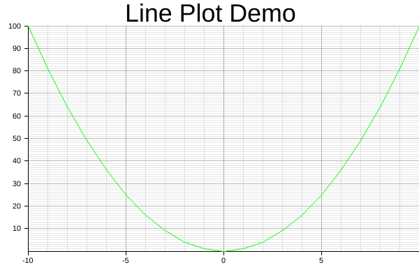
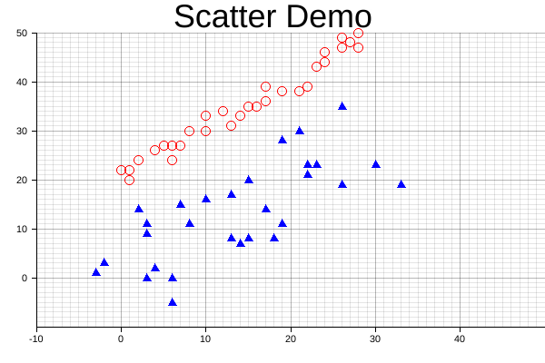
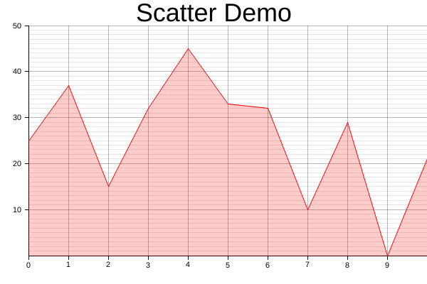
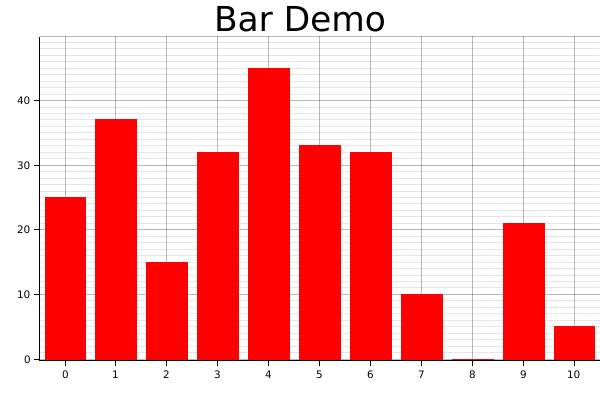
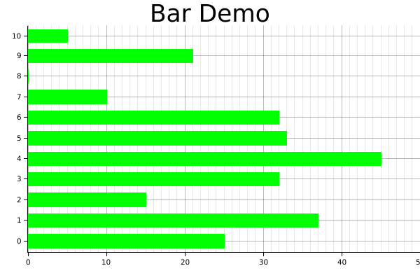
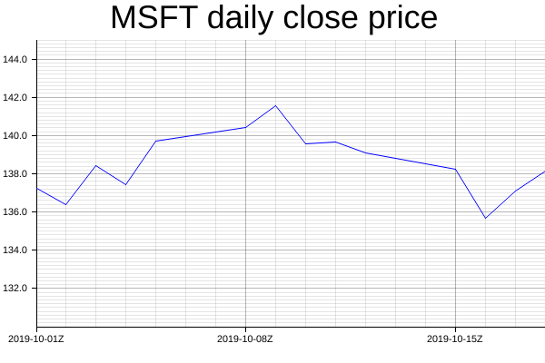
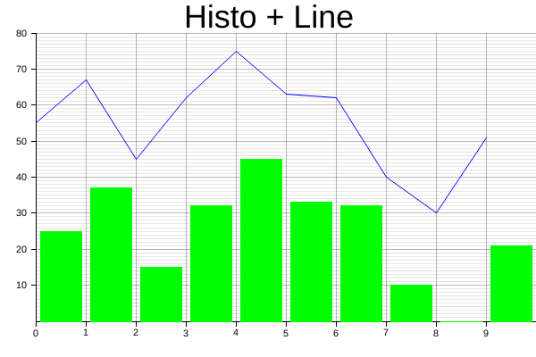
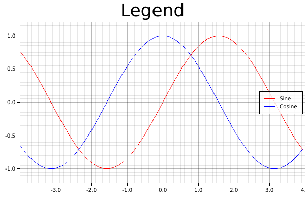

Basic data plotting
In this section, let's use Plotters to produce different types of Plotting.
Generally speaking, the API ChartContext::draw_series provides the functionality
to draw any types of chart. In the following parts, let's discuss how to use it to
render different types of plots.
Line series
The following code demonstrate how to draw a line series with Plotters
use plotters::prelude::*; fn main() { let root_area = BitMapBackend::new("images/2.5.png", (600, 400)) .into_drawing_area(); root_area.fill(&WHITE).unwrap(); let mut ctx = ChartBuilder::on(&root_area) .set_label_area_size(LabelAreaPosition::Left, 40) .set_label_area_size(LabelAreaPosition::Bottom, 40) .caption("Line Plot Demo", ("Arial", 40)) .build_ranged(-10..10, 0..100) .unwrap(); ctx.configure_mesh().draw().unwrap(); ctx.draw_series( LineSeries::new((-10..=10).map(|x| (x, x* x)), &GREEN) ).unwrap(); }
It should produce the following image

Scatter Plot
The following code demonstrate how we can crate a scatter plot and use different pointing elements.
In the example, we use Circle and TriangleMarker pointing element for two different series.
In this example, we assume there are DATA1 and DATA2 defined. See the source for the details.
use plotters::prelude::*; fn main() { let root_area = BitMapBackend::new("images/2.6.png", (600, 400)) .into_drawing_area(); root_area.fill(&WHITE).unwrap(); let mut ctx = ChartBuilder::on(&root_area) .set_label_area_size(LabelAreaPosition::Left, 40) .set_label_area_size(LabelAreaPosition::Bottom, 40) .caption("Scatter Demo", ("Arial", 40)) .build_ranged(-10..50, -10..50) .unwrap(); ctx.configure_mesh().draw().unwrap(); ctx.draw_series( DATA1 .into_iter() .map(|point| TriangleMarker::new(*point, 5, &BLUE)), ) .unwrap(); ctx.draw_series(DATA2.into_iter().map(|point| Circle::new(*point, 5, &RED))) .unwrap(); }
And this will produce the following image.

Area chart
The following demo demonstrate how we can draw an area chart.
use plotters::prelude::*; fn main() { let root_area = BitMapBackend::new("images/2.7.png", (600, 400)) .into_drawing_area(); root_area.fill(&WHITE).unwrap(); let mut ctx = ChartBuilder::on(&root_area) .set_label_area_size(LabelAreaPosition::Left, 40) .set_label_area_size(LabelAreaPosition::Bottom, 40) .caption("Scatter Demo", ("Arial", 40)) .build_ranged(0..10, 0..50) .unwrap(); ctx.configure_mesh().draw().unwrap(); let data = [25, 37, 15, 32, 45, 33, 32, 10, 29, 0, 21]; ctx.draw_series( AreaSeries::new( (0..).zip(data.into_iter()), // The data iter 0, // Baseline &RED.mix(0.2) // Make the series opac ).border_style(&RED) // Make a brighter border ) .unwrap(); }
Result image:

Histogram
In practice, the histogram can be two things:
- A bar plot
- Or a bar plot that shows the distribution of values
For a bar plot, we can simply create with a iterator that yields a series of
rectangle. The following code demonstrates how. The function Rectangle::margin
is used to set a pixel based margin for the rectangle element.
use plotters::prelude::*; fn main() { let root_area = BitMapBackend::new("images/2.8.png", (600, 400)) .into_drawing_area(); root_area.fill(&WHITE).unwrap(); let mut ctx = ChartBuilder::on(&root_area) .set_label_area_size(LabelAreaPosition::Left, 40) .set_label_area_size(LabelAreaPosition::Bottom, 40) .caption("Bar Demo", ("Arial", 40)) .build_ranged(0..10, 0..50) .unwrap(); ctx.configure_mesh().draw().unwrap(); let data = [25, 37, 15, 32, 45, 33, 32, 10, 0, 21]; ctx.draw_series((0..).zip(data.iter()).map(|(x, y)| { let mut bar = Rectangle::new([(x, 0), (x + 1, *y)], RED.filled()); bar.set_margin(0, 0, 5, 5); bar })) .unwrap(); }
Result image:

Similarly, the following code draws a vertical bar chart.
use plotters::prelude::*; fn main() { let root_area = BitMapBackend::new("images/2.9.png", (600, 400)) .into_drawing_area(); root_area.fill(&WHITE).unwrap(); let mut ctx = ChartBuilder::on(&root_area) .set_label_area_size(LabelAreaPosition::Left, 40) .set_label_area_size(LabelAreaPosition::Bottom, 40) .caption("Bar Demo", ("Arial", 40)) .build_ranged(0..50, 0..10) .unwrap(); ctx.configure_mesh().draw().unwrap(); let data = [25, 37, 15, 32, 45, 33, 32, 10, 0, 21]; ctx.draw_series((0..).zip(data.iter()).map(|(y, x)| { let mut bar = Rectangle::new([(0, y), (*x, y + 1)], GREEN.filled()); bar.set_margin(5, 5, 0, 0); bar })) .unwrap(); }
Result image:

For the second type of histogram, there's a Histogram series type is defined for this purpose.
Time Series Chart
In theory Plotters supports any data type to be axis. The only requirement is to implement the axis mapping traits. By default, Plotters has built-in implementation of axis traits for date and time types. To make a time series chart, you should first import the chrono crate and define a time range as axis. The following example shows how we can plot a time series data.
use plotters::prelude::*; use chrono::{Utc, TimeZone}; fn main() { let root_area = BitMapBackend::new("images/2.11.png", (600, 400)) .into_drawing_area(); root_area.fill(&WHITE).unwrap(); let start_date = Utc.ymd(2019, 10, 1); let end_date = Utc.ymd(2019, 10, 18); let mut ctx = ChartBuilder::on(&root_area) .set_label_area_size(LabelAreaPosition::Left, 40) .set_label_area_size(LabelAreaPosition::Bottom, 40) .caption("MSFT daily close price", ("Arial", 40)) .build_ranged(start_date..end_date, 130.0..145.0) .unwrap(); ctx.configure_mesh().draw().unwrap(); ctx.draw_series( LineSeries::new( (0..).zip(DATA.iter()).map(|(idx, price)| { let day = (idx / 5) * 7 + idx % 5 + 1; let date = Utc.ymd(2019,10, day); (date, *price) }), &BLUE, ) ).unwrap(); } const DATA: [f64; 14] = [ 137.24, 136.37, 138.43, 137.41, 139.69, 140.41, 141.58, 139.55, 139.68, 139.10, 138.24, 135.67, 137.12, 138.12 ];
Result image:

Customized series
Plotters allows you draw arbitrary types of series, even the one isn't built into the Plotters crate. Plotters uses a really simple abstraction for a data series: An iterator of drawable elements. Thus if you can make your own series an iterator of drawable element, it's a valid data series and can be draw on a figure.
Multiple Data Series
By calling draw_series multiple time, Plotters is able to produce the multiple series plot.
Thus, we don't limit the developer's ability to put different types of plot series onto the same
image. The following example shows plotting a histogram along with a line plot.
use plotters::prelude::*; fn main() { let root_area = BitMapBackend::new("images/2.10.png", (600, 400)) .into_drawing_area(); root_area.fill(&WHITE).unwrap(); let mut ctx = ChartBuilder::on(&root_area) .set_label_area_size(LabelAreaPosition::Left, 40) .set_label_area_size(LabelAreaPosition::Bottom, 40) .caption("Histo + Line", ("Arial", 40)) .build_ranged(0..10, 0..80) .unwrap(); ctx.configure_mesh().draw().unwrap(); let data = [25, 37, 15, 32, 45, 33, 32, 10, 0, 21]; // Draw the histogram ctx.draw_series((0..).zip(data.iter()).map(|(x, y)| { let mut bar = Rectangle::new([(x, 0), (x + 1, *y)], GREEN.filled()); bar.set_margin(0, 0, 5, 5); bar })) .unwrap(); // Draw the line series ctx.draw_series(LineSeries::new( (0..).zip(data.iter()).map(|(x, y)| (x, *y + 30)), &BLUE, )) .unwrap(); }
Result image:

Legend
Plotters allows user add legend on the figure. Specifically, Plotters called the it "series label".
When you call ChartContext::draw_series, a result type that carries a handle to a series annotation
is returned and you can use it to add a series label to that.
After you complete the data plotting, ChartContext::configure_series_label can be called to configure and draw
the collections of series label. The following example demonstrate how.
use plotters::prelude::*; fn main() { let root_area = BitMapBackend::new("images/2.12.png", (600, 400)) .into_drawing_area(); root_area.fill(&WHITE).unwrap(); let mut ctx = ChartBuilder::on(&root_area) .set_label_area_size(LabelAreaPosition::Left, 40) .set_label_area_size(LabelAreaPosition::Bottom, 40) .caption("Legend", ("Arial", 40)) .build_ranged(-4.0..4.0, -1.2..1.2) .unwrap(); ctx.configure_mesh().draw().unwrap(); let x_kps: Vec<_> = (-80..80).map(|x| x as f64 / 20.0).collect(); ctx.draw_series(LineSeries::new(x_kps.iter().map(|x| (*x, x.sin())), &RED)) .unwrap() .label("Sine") .legend(|(x, y)| Path::new(vec![(x, y), (x + 20, y)], &RED)); ctx.draw_series(LineSeries::new(x_kps.iter().map(|x| (*x, x.cos())), &BLUE)) .unwrap() .label("Cosine") .legend(|(x, y)| Path::new(vec![(x, y), (x + 20, y)], &BLUE)); ctx.configure_series_labels() .border_style(&BLACK) .background_style(&WHITE.mix(0.8)) .draw() .unwrap(); }
Result image:
